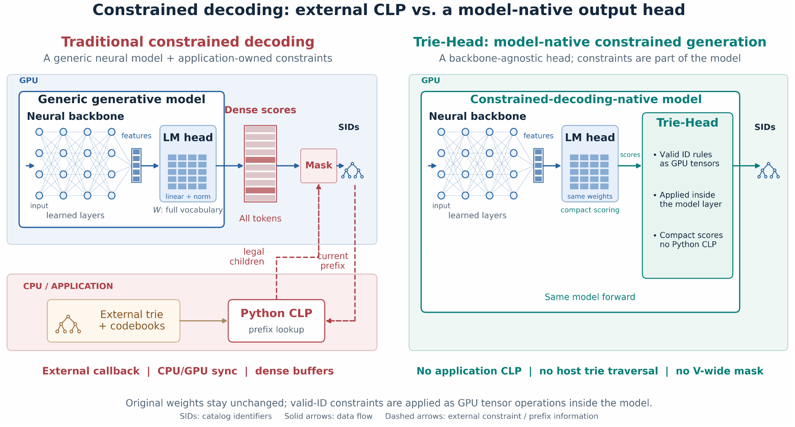
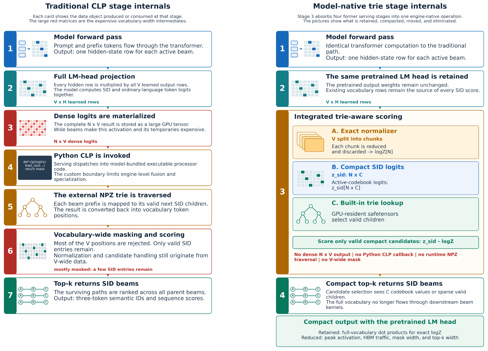
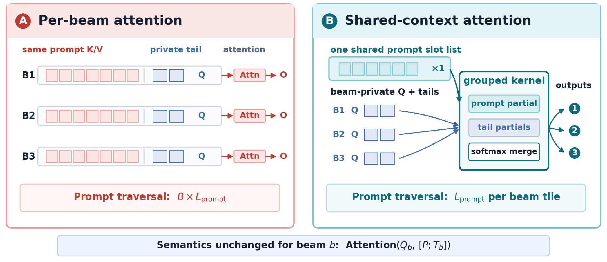

Contents · 5 sections
1What one request does in the baseline2Two costs that get repeated3Keep compact codebook candidate scores and stream the full-vocabulary normalizer4Wide beams still reread the same prompt5How much throughput rises, and what the numbers do not saySHARE
To keep 1,800 valid identifiers, the model first scores the whole vocabulary and then throws most of it away: how Trie-Head changes wide-beam generative retrieval
Generative retrieval lets a model write a short identifier for a catalog entry, rather than encoding every record as a vector and searching for nearby ones. In these two workloads, each identifier has three tokens, one from each depth’s codebook. All valid identifiers sit in a prefix trie, and decoding may follow only those branches that still lead to a real entry.
The usual implementation gets expensive once the candidate pool has to stay wide. The paper is a LinkedIn preprint. In its two production-derived replays, the Qualification Retrieval Platform uses a beam width of 1,800, and LinkedIn Hiring Assistant uses 2,000. The common path is: the model first scores the full vocabulary, then a Python custom logit processor (CLP) looks up the trie and sets illegal positions to negative infinity. Most of those scores are discarded at once, and every surviving beam also rereads the same prompt.
The authors turn the trie into a model-native output interface called Trie-Head. The constraints travel with the pretrained output weights as validated GPU tensors. The head scores only the compact codebook candidates at the current depth, while still streaming the full-vocabulary normalizer, so a valid token’s score matches the original model in real arithmetic. Shared-context attention then lets the beams reuse the prompt key/value cache and keep only their own short generated tails. The system is implemented in SGLang. It needs no retraining and does not change the catalog.
What one request does in the baseline
Hiring Assistant maps a natural-language hiring request to member semantic identifiers (SIDs), then merges them with existing Boolean and semantic sources. Downstream ranking and recruiter review are outside the measurements in this paper. The Qualification Retrieval Platform starts from a member profile and generates qualification identifiers, such as skills and experience, from a supplied catalog. The paper states that these qualification labels are model predictions from profile text, and are not used on their own to make decisions about members. The SIDs themselves are opaque codes; mapping them to member records happens in a separate, access-controlled service. Generative retrieval is therefore an extra candidate source, not a substitute for ranking or human judgment.
Both workloads share the same fixed-depth scheme: three contiguous vocabulary codebooks, each with C tokens, and an SID made of three integer codes. Only a subset Y of that codebook cube names indexed entities. So a token can belong to a codebook and still fail to extend the current prefix toward any real entry. Constrained decoding has to allow only the next steps that still lead to Y.
The paper walks an illustrative qualification SID (17, 4, 9) through the baseline. At depth 0 the prompt hidden state is projected against the full language-model (LM) head, all V vocabulary positions are normalized, the Python CLP is invoked, valid root codes are queried, a vocabulary-width mask is written, and candidates are selected. The same sequence runs again after the prefix becomes (17), and again after (17, 4). Local candidates are then ranked together to form the next frontier. A request with beam width 1,800 can repeat this path across as many as 1,800 rows. After the first token, those rows still read the same profile prompt and differ only in a one- or two-token tail.

Two costs that get repeated
For N live beams and vocabulary size V, the baseline computes and keeps an N-by-V score matrix, then sends it through normalization, the CLP, masking, and top-k selection. An FP32 intermediate occupies 4NV bytes before the workspace used for masks and selection. In parallel, row-wise attention traverses the same shared prompt N times.
Both costs grow as the beam widens. The Qualification Retrieval Platform has a mean prompt of about 1,653 tokens, a codebook width of 256, and a dense trie, so it stresses long prompts and dense membership tests. Hiring Assistant has a shorter prompt of about 252 tokens, but a codebook width of 8,192, a sparse trie, and a beam width of 2,000, so it stresses wide codebooks and sparse lookup. The measurements cover global-catalog SID generation from a fixed checkpoint. They exclude tokenization, external HTTP, identifier resolution, and downstream ranking.
Keep compact codebook candidate scores and stream the full-vocabulary normalizer
Trie-Head packages the complete SID trie with the pretrained model as a versioned tensor artifact. Codebook metadata marks the identifier ranges in the vocabulary, and valid paths are stored in compressed sparse row (CSR) style root, prefix, offset, and terminal tensors. Construction deduplicates and sorts the identifiers, then reconstructs the paths to check exact set equality. At load time, SGLang checks the schema, token ranges, sorted groups, and monotonic offsets before moving the tensors to the GPU. Models that do not opt in keep the ordinary output path. Once a model opts in, the artifact must be valid: a malformed file fails startup rather than quietly changing the constraints.
The head does not keep a vocabulary-wide candidate matrix. For a hidden state h, a token’s log-probability is its transformed score minus the log-sum-exp over the whole vocabulary, written log Z. A dense CLP computes every position’s score, normalizes over V, then masks the illegal entries. Trie-Head projects only the active codebook into compact candidate scores of size N times C. It still computes the full-vocabulary normalizer, because log Z differs by row and therefore changes who enters the global top B. The implementation scans the vocabulary in chunks, reduces each chunk to a maximum and a shifted log-sum, and discards that chunk immediately. After the scan, a valid token t receives its own score minus log Z. The model’s original score scale and soft cap are preserved, and the weights are not changed. Hoot says
The figure uses two live beam rows to show who ranks higher from the compact scores z alone, and how the current-step ranking flips after each row subtracts its own log Z. The numbers are illustrative, not paper measurements.
two rows of compact candidate scores z → each row streams a different full-vocabulary log Z and discards the chunks → after the current-step score z − log Z, the ranking flips
- two live beams, looking first at the compact scores z that are keptIn the figure, row A’s candidate score is 6.0 and row B’s is 5.5, both illustrative. Ranking by these kept z values alone would put row A ahead.
- the full vocabulary is still scanned in chunks to get each row’s own log ZTrie-Head does not keep a vocabulary-wide candidate matrix, but it still computes the normalizer over the full vocabulary and discards each chunk’s activations at once. In the figure, row A’s log Z is 7.0 and row B’s is 6.0, both illustrative.
- after subtracting log Z, the current-step ranking flipsThe current-step score is z minus log Z: row A becomes −1.0 and row B becomes −0.5, so row B is now ahead. A row-wise normalizer can therefore change who enters the global top B.6.0 − 7.0 = −1.0; 5.5 − 6.0 = −0.5 (illustrative)
Source
Paper §3.3: a valid token’s log-probability is its score minus the full-vocabulary log Z. Trie-Head materializes only compact codebook candidate scores at the current depth, but still streams the full-vocabulary normalizer, because log Z differs by row and affects global beam ranking. The implementation scans the vocabulary in chunks and discards each chunk after the reduction. The z, log Z, and rank flip in the figure are illustrative, not paper measurements. These are current-step scores z−log Z, not earlier path terms, which the paper does not spell out.Depths 0 and 1 can use Boolean masks of size C and C squared. A dense mask at depth 2 would grow as C cubed, so when that state does not fit, sorted prefix keys and CSR offsets identify the valid terminal codes instead. The membership test is applied directly to the compact candidates. The storage choice changes lookup cost, not the accepted identifier set.
Ordinary beam search often keeps up to 2B candidates, because a stop token can take a slot without advancing the frontier. Nonterminal SID depths have no stop token, so stop tokens do not take slots at those steps. Candidates in the same row share the prefix already generated, so the local ranking depends only on this step’s score minus log Z. Keeping min(B, C) candidates per row is enough: anything below local rank B already has B higher-scoring candidates from its own row. The paper does not spell out how earlier path scores, if any, enter the comparison across rows.

Wide beams still reread the same prompt
After the output path is compacted, another repeated cost remains: every beam query attends to the same prompt key/value cache, but each row scans it again. Shared-context attention stores one prompt-slot list and a private decode slot for each beam. The kernel tiles the beam queries and reuses prompt key/value blocks once per query tile. The queries differ by beam, so the prompt-side scores and weighted sums are still computed per beam; what is shared is the reading of the key/value blocks. The kernel then merges the partial softmax states of the prompt and each short tail. For beam b, the result equals attention over the shared prompt followed by that beam’s own tail, in real arithmetic, so the semantics do not change.

This path needs compatible causal attention and key/value layouts. When a layout is unsupported, the system falls back to ordinary attention. Features that would change output semantics, such as unsupported quantization or LoRA mutation, also fall back to the dense output head. Beam width is a per-request setting, so the same server can accept large and small beams without a restart.
How much throughput rises, and what the numbers do not say
The comparison is between two serving systems. The CLP baseline uses SGLang 0.5.19’s native beam search, dense vocabulary scoring, and a Python trie constraint. The combined system uses Trie-Head with shared-context attention. Model weights, tokenizer settings, prompt replay, beam width, and resource budgets are held fixed. Each workload runs on one NVIDIA H200 in BF16 with CUDA graphs. Prefix caching is on for the Qualification Retrieval Platform and off for Hiring Assistant. Each point uses five independent processes, and each process replays 1,000 measured requests. Timing runs from engine submission to the complete raw beam response, including prefill, decoding, constraints, attention, selection, and internal assembly. It excludes tokenization, external HTTP, identifier resolution, downstream ranking, and file writing.
At every matched closed-loop point in Figure 4, the combined system raises throughput. The gain is 3.63 to 5.57 times on the Qualification Retrieval Platform, and 1.98 to 2.69 times on Hiring Assistant, so the size of the gain depends on the workload and the concurrency. Open-loop tests ask how high an arrival rate the system can still follow when the mean per-run 95th-percentile latency stays at most 1.2 seconds and valid completions are at least 98% of arrivals. Under those rules, the Qualification Retrieval Platform’s offered rate rises from 3 to 28, and Hiring Assistant’s from 6 to 24, so the valid completion rates are about 27.44 and 23.54 requests per second. The Qualification Retrieval Platform still meets the latency threshold at 30 arrivals per second, but its completion rate falls below 98%. Device memory does not drop uniformly: Hiring Assistant uses more memory at high concurrency, while also completing more requests.
The table below reports completed requests per second at a fixed client concurrency, with each mechanism on its own and with both together. The Qualification Retrieval Platform uses concurrency 4, and Hiring Assistant uses concurrency 8. The numbers come from paper Table 4 and are five-run means. The standalone measurements use separate source builds, and shared-attention-only decode runs eagerly, so these ratios compare serving configurations. They are not a same-build causal ablation.
| Configuration | Qualification Retrieval QPS | vs. CLP | Hiring Assistant QPS | vs. CLP |
|---|---|---|---|---|
| CLP baseline | 5.691 | 1.00× | 8.142 | 1.00× |
| Trie-Head only | 6.873 | 1.21× | 12.200 | 1.50× |
| Shared attention only | 14.355 | 2.52× | 12.251 | 1.50× |
| Both together | 24.073 | 4.23× | 19.286 | 2.37× |
Every measured response contains the requested number of unique, trie-valid SIDs. Finite precision can still reorder close scores. Table 2’s set agreement is the size of the intersection of the two result sets at cutoff k, divided by k and then averaged over prompts, so it is a mean overlap ratio, not the share of requests whose full sets match. Over 1,000 prompts, full-beam and top-100 agreement are 97.50% and 96.12% on the Qualification Retrieval Platform, and 93.58% and 91.47% on Hiring Assistant. On the first 50 prompts passed through the application resolver, the cutoffs are 100 and 200, and the agreement is 96.10% and 91.66%. That means the constraints are kept, but the ranked identifier sets are not bitwise identical, and the numbers do not show that retrieval relevance is unchanged. A production change to the serving path would still need the quality and responsible-AI evaluation the paper describes.
The external comparisons have explicit limits. Against BF16 FlashRec, the serving comparison uses the Qualification Retrieval Platform at a common beam width of 200, where the combined system’s closed-loop throughput is up to 2.63 times higher. This is not a score-equivalence claim: the present path keeps the full-vocabulary normalizer, and FlashRec uses its active-codebook normalizer. FlashRec’s fused selector supports beam widths up to 512, which is below the production beam widths of both workloads. The comparison with an NVIDIA-supplied GR-Inference prototype first limits fan-out, in lexicographic order, to what that native path allows, then uses beam width 1,000 and candidate-normalized scores on a compatible catalog. It does not establish throughput or ranked-output equivalence on the production catalog.
Trie-Head currently supports three-token SIDs in equal-sized, contiguous codebooks, not arbitrary grammars or request-dependent constraints. Shared-context attention also needs compatible attention and key/value layouts. The measurements cover these two workloads on an H200, not every model family or device. Tokenization, identifier resolution, and CPU-side request handling remain in the full job, and their cost does not fall in proportion to GPU inference time, so single-GPU queries per second cannot by themselves establish a shorter pipeline wall-clock time. Production data, model checkpoints, and identifier catalogs are not released with the paper.
How did this read for you?
Hoot made a note. Thanks for the feedback.
One tap, no sign-in; tap again to undo. Only anonymous counts are kept, never who you are.
Discussion
Add experiment details, reproduction notes or a different take. Requires a GitHub sign-in.
Loading the discussion…